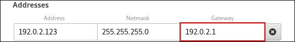
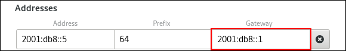
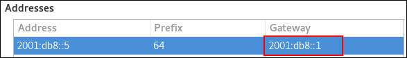
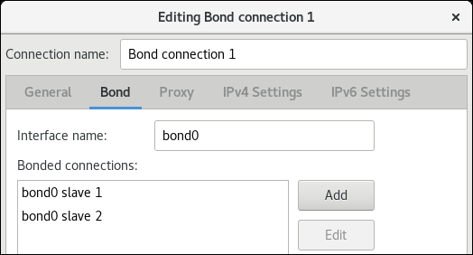
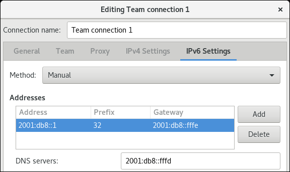
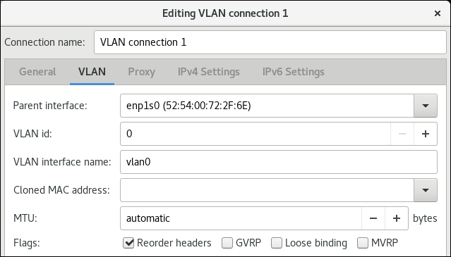
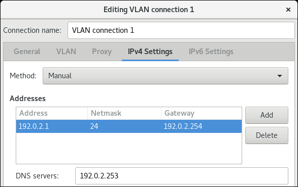

You can configure a network interface using the following Graphical User Interface (GUI) ways:
- the GNOME Shell network connection icon on the top right of the desktop
- the GNOME control-center application
- the GNOME nm-connection-editor application
To access the Network settings, click on the GNOME Shell network connection icon in the top right-hand corner of the screen to open its menu:
When you click on the GNOME Shell network connection icon, you can see:
-
A list of categorized networks you are currently connected to (such as
WiredandWi-Fi). -
A list of all
Available Networksthat NetworkManager has detected. If you are connected to a network, this is indicated on the left of the connection name. Options for connecting to any configured Virtual Private Networks (VPNs)
and
-
An option for selecting the
Network Settingsmenu entry.
You can create a network connection through the GNOME control-center application, which is a graphical user interface that provides a view of available network devices and their current configuration.
This procedures describes how to create a new wired, wireless, vpn connection using control-center:
Procedure
Press the Super key to enter the Activities Overview, type
Settings, and press Enter. Then, select theNetworktab on the left-hand side, and theNetworksettings tool appears:Click the plus button to add a new connection:
-
For Wired connections, click the plus button next to
Wiredentry and configure the connection. -
For VPN connections, click the plus button next to
VPNentry. If you want to add anIPsec VPN, click onIPsec based VPNand configure the connection. -
For Wi-Fi connections, click the
Wi-Fientry on the left-hand side in theSettingsmenu and configure the connection.
-
For Wired connections, click the plus button next to
You can configure a network connection through the GNOME control-center application.
Procedure
-
Press the Super key to enter the Activities Overview, type
Settingsand press Enter. Then, select theNetworkmenu entry on the left-hand side, and theNetworksettings tool appears, see Opening the Network Settings Window Select the
Wirednetwork interfaceThe system creates and configures a single wired connection profile called
Wiredby default. More than one profile can be created for an interface and applied as needed. The default profile cannot be deleted but its settings can be changed.-
Edit the default
Wiredprofile by clicking the gear wheel icon to edit an existing connection or click the plus button and then set the configuration options for a new connection.
Note
When you add a new connection by clicking the plus button, NetworkManager creates a new configuration file for that connection and then opens the same dialog that is used for editing an existing connection. The difference between these dialogs is that an existing connection profile has a Details menu entry.
Basic configuration options
You can see the following configuration settings in the Wired dialog, by selecting the Identity menu entry:

-
Name— Enter a descriptive name for your network connection. This name will be used to list this connection in the menu of theNetworkwindow. -
MAC Address— Select the MAC address of the interface this profile must be applied to. -
Cloned Address— If required, enter a different MAC address to use. -
MTU— If required, enter a specific maximum transmission unit (MTU) to use. The MTU value represents the size in bytes of the largest packet that the link layer will transmit. This value defaults to1500and does not generally need to be specified or changed.
Configuring IPv4 settings for wired with control-center
You can further configure IPv4 settings in a wired connection. In the Wired dialog, click the IPv4 menu entry:
The IPv4 menu entry allows you to configure:
-
the
IPv4 Methodused to connect to a network -
DNSand -
Routes
IPv4 Method
Automatic (DHCP) — Choose this option if the network you are connecting to uses Router Advertisements (RA) or a DHCP server to assign dynamic IP addresses.
Link-Local Only — Choose this option if the network you are connecting to does not have a DHCP server and you do not want to assign IP addresses manually. Random addresses will be assigned as per RFC 3927 with prefix 169.254/16.
Manual — Choose this option if you want to assign IP addresses manually.
Disable — IPv4 is disabled for this connection.
DNS
In the DNS section, when Automatic is ON. Switch Automatic to OFF to enter the IP address of a DNS server you want to use separating the IPs by comma.
Routes
Note
In the Routes section, when Automatic is ON, routes from Router Advertisements (RA) or DHCP are used, but you can also add additional static routes. When OFF, only static routes are used.
Address — Enter the IP address of a remote network, sub-net, or host.
Netmask — The netmask or prefix length of the IP address entered above.
Gateway — The IP address of the gateway leading to the remote network, sub-net, or host entered above.
Metric — A network cost, a preference value to give to this route. Lower values will be preferred over higher values.
Use this connection only for resources on its network
Select this check box to prevent the connection from becoming the default route. Typical examples are where a connection is a VPN tunnel or a leased line to a head office and you do not want any Internet-bound traffic to pass over the connection. Selecting this option means that only traffic specifically destined for routes learned automatically over the connection or entered here manually will be routed over the connection.
Configuring IPv6 settings for wired with control center
Alternatively, to configure IPv6 settings in a wired connection, click the IPv6 menu entry:

The IPv6 menu entry allows you to configure:
-
the
IPv6 Methodused to connect to a network -
DNSand -
Routes
IPv6 Method
Automatic — Choose this option to use IPv6 Stateless Address AutoConfiguration (SLAAC) to create an automatic, stateless configuration based on the hardware address and Router Advertisements (RA).
Automatic, DHCP only — Choose this option to not use RA, but request information from DHCPv6 directly to create a stateful configuration.
Link-Local Only — Choose this option if the network you are connecting to does not have a DHCP server and you do not want to assign IP addresses manually. Random addresses will be assigned as per RFC 4862 with prefix FE80::0.
Manual — Choose this option if you want to assign IP addresses manually.
Disabled — IPv6 is disabled for this connection.
Configuring 802.1X security for wired with control-center
802.1X security is the name of the IEEE standard for port-based Network Access Control (PNAC). It is also called WPA Enterprise. 802.1X security is a way of controlling access to a logical network from a physical one. All clients who want to join the logical network must authenticate with the server (a router, for example) using the correct 802.1X authentication method.
To configure 802.1X Security settings in a wired connection, click the Security menu entry:
To enable settings configuration, set the symbolic power button to ON, and select from one of following authentication methods:
-
TLSfor Transport Layer Security and proceed to Configuring TLS Settings -
PWDfor Password and proceed to Configuring PWD Settings -
FASTfor Flexible Authentication through Secure Tunneling and proceed to Configuring FAST Settings -
Select
Tunneled TLSfor Tunneled Transport Layer Security, otherwise known as TTLS, or EAP-TTLS and proceed to Configuring Tunneled TLS Settings -
Select
Protected EAP (PEAP)for Protected Extensible Authentication Protocol and proceed to Configuring Protected EAP PEAP Settings
Configuring TLS settings
With Transport Layer Security (TLS), the client and server mutually authenticate using the TLS protocol.
Using TLS security requires the overhead of a public key infrastructure (PKI) to manage certificates. The benefit of using TLS security is that a compromised password does not allow access to the (W)LAN: an intruder must also have access to the authenticating client’s private key.
NetworkManager does not determine the version of TLS supported. NetworkManager gathers the parameters entered by the user and passes them to the daemon, wpa_supplicant, that handles the procedure. It in turn uses OpenSSL to establish the TLS tunnel. OpenSSL itself negotiates the SSL/TLS protocol version. It uses the highest version both ends support.
To configure TLS settings, follow the procedure described in the section called “Configuring a Wired (Ethernet) connection using control-center”. The following configuration settings are available:
Identity- Provide the identity of this server.
User certificate- Click to browse for, and select, a personal X.509 certificate file encoded with Distinguished Encoding Rules (DER) or Privacy Enhanced Mail (PEM).
CA certificate- Click to browse for, and select, an X.509 certificate authority certificate file encoded with Distinguished Encoding Rules (DER) or Privacy Enhanced Mail (PEM).
Private key- Click to browse for, and select, a private key file encoded with Distinguished Encoding Rules (DER), Privacy Enhanced Mail (PEM), or the Personal Information Exchange Syntax Standard (PKCS #12).
Private key password-
Enter the password for the private key in the
Private keyfield. SelectShow passwordto make the password visible as you type it.
Configuring PWD settings
With Password (PWD), you can specify the username and the password.
Username- Enter the user name to be used in the authentication process.
Password- Enter the password to be used in the authentication process.
Configuring FAST settings
To configure FAST settings, follow the procedure described in the section called “Configuring a Wired (Ethernet) connection using control-center”. The following configuration settings are available:
Anonymous Identity- Provide the identity of this server.
Allow automatic PAC provisioning- Select the check box to enable and then select from Anonymous, Authenticated, and Both.
PAC file- Click to browse for, and select, a protected access credential (PAC) file.
Inner authenticationGTC— Generic Token Card.MSCHAPv2— Microsoft Challenge Handshake Authentication Protocol version 2.Username- Enter the user name to be used in the authentication process.
Password- Enter the password to be used in the authentication process.
Configuring tunneled TLS settings
To configure Tunneled TLS settings, follow the procedure described in the section called “Configuring a Wired (Ethernet) connection using control-center”. The following configuration settings are available:
Anonymous identity- This value is used as the unencrypted identity.
CA certificate- Click to browse for, and select, a Certificate Authority’s certificate.
Inner authenticationPAP— Password Authentication Protocol.MSCHAP— Challenge Handshake Authentication Protocol.MSCHAPv2— Microsoft Challenge Handshake Authentication Protocol version 2.MSCHAPv2 (no EAP)— Microsoft Challenge Handshake Authentication Protocol version 2 without Extensive Authentication Protocol.CHAP— Challenge Handshake Authentication Protocol.MD5— Message Digest 5, a cryptographic hash function.GTC— Generic Token Card.Username- Enter the user name to be used in the authentication process.
Password- Enter the password to be used in the authentication process.
Configuring protected EAP (PEAP) settings
To configure Protected EAP (PEAP) settings, follow the procedure described in the section called “Configuring a Wired (Ethernet) connection using control-center”. The following configuration settings are available:
Anonymous Identity- This value is used as the unencrypted identity.
CA certificate- Click to browse for, and select, a Certificate Authority’s certificate.
PEAP version- The version of Protected EAP to use. Automatic, 0 or 1.
Inner authenticationMSCHAPv2— Microsoft Challenge Handshake Authentication Protocol version 2.MD5— Message Digest 5, a cryptographic hash function.GTC— Generic Token Card.Username- Enter the user name to be used in the authentication process.
Password- Enter the password to be used in the authentication process.
This procedure describes how you can connect to a wireless network to get access to the internet.
Procedure
- Open the GNOME Shell network connection icon menu from the top right-hand corner of the screen.
-
Select
Wi-Fi Not Connected. -
Click the
Select Networkoption. Click the name of the network to which you want to connect, and then click
Connect.Note that if you do not see the network, the network might be hidden.
If the network is protected by a password or encryption keys are required, enter the password and click
Connect.Note that if you do not know the password, contact the administrator of the Wi-Fi network.
- If the connection is successful, the name of the network is visible in the connection icon menu and the wireless indicator is on the top right-hand corner of the screen.
Additional resources
When you connect to a Wi-Fi, the network settings are prefilled depending on the current network connection. This means that the settings will be detected automatically when the interface connects to a network.
This procedure describes how to use control-center to manually configure the Wi-Fi settings.
Prerequisites
Procedure
-
Press the Super key to enter the
Activities Overview, typeWi-Fiand press Enter. In the left-hand-side menu entry you see the list of available networks. Select the gear wheel icon to the right of the
Wi-Ficonnection name that you want to edit, and the editing connection dialog appears. The Details menu window shows the connection details where you can make further configuration.Options
-
If you select
Connect automatically, NetworkManager auto-connects to this connection whenever NetworkManager detects that it is available. If you do not want NetworkManager to connect automatically, clear the check box. Note that when the check box is clear, you have to select that connection manually in the network connection icon’s menu to cause it to connect. -
To make a connection available to other users, select the
Make available to other userscheck box. You can also control the background data usage. If you leave
Restrict background data usageunspecified (default), then NetworkManager tries to download data that you are actively using. Otherwise, select the check box and NetworkManager sets the connection as metered, and applies restriction on the background data usage.Note
To delete a
Wi-Ficonnection, click theForget Connectionred box.
-
If you select
Select the Identity menu entry to see the basic configuration options.
SSID— The Service Set Identifier (SSID) of the access point (AP).BSSID— The Basic Service Set Identifier (BSSID) is the MAC address, also known as a hardware address, of the specific wireless access point you are connecting to when inInfrastructuremode. This field is blank by default, and you are able to connect to a wireless access point bySSIDwithout having to specify itsBSSID. If the BSSID is specified, it will force the system to associate to a specific access point only. For ad-hoc networks, theBSSIDis generated randomly by the mac80211 subsystem when the ad-hoc network is created. It is not displayed by NetworkManager.MAC address— The MAC address allows you to associate a specific wireless adapter with a specific connection (or connections).Cloned Address— A cloned MAC address to use in place of the real hardware address. Leave blank unless required.For further IP address configuration , select the IPv4 and IPv6 menu entries.
By default, both
IPv4andIPv6are set to automatic configuration depending on current network settings. This means that addresses such as the local IP address, DNS address, and other settings will be detected automatically when the interface connects to a network. If a DHCP server assigns the IP configuration in this network, this is sufficient, but you can also provide static configuration in theIPv4andIPv6Settings. In the IPv4 and IPv6 menu entries, you can see the following settings:IPv4 Method-
Automatic (DHCP)— Choose this option if the network you are connecting to uses Router Advertisements (RA) or aDHCPserver to assign dynamic IP addresses. You can see the assigned IP address in the Details menu entry. -
Link-Local Only— Choose this option if the network you are connecting to does not have aDHCPserver and you do not want to assign IP addresses manually. Random addresses will be assigned as per RFC 3927 with prefix169.254/16. -
Manual— Choose this option if you want to assign IP addresses manually. -
Disable—IPv4is disabled for this connection.
-
DNSIf
AutomaticisON, and no DHCP server is available that assigns DNS servers to this connection, switch it toOFFto enter the IP address of a DNS server separating the IPs by comma.RoutesNote that in the
Routessection, whenAutomaticisON, routes from Router Advertisements (RA) or DHCP are used, but you can also add additional static routes. WhenOFF, only static routes are used.-
Address— Enter theIPaddress of a remote network, sub-net, or host. -
Netmask— The netmask or prefix length of the IP address entered above. -
Gateway— The IP address of the gateway leading to the remote network, sub-net, or host entered above. -
Metric— A network cost, a preference value to give to this route. Lower values will be preferred over higher values.
-
Use this connection only for resources on its networkSelect this check box to prevent the connection from becoming the default route.
Alternatively, to configure
IPv6settings in aWi-Ficonnection, select the menu entry:IPv6 Method-
Automatic— Choose this option to useIPv6Stateless Address AutoConfiguration (SLAAC) to create an automatic, stateless configuration based on the hardware address and Router Advertisements (RA). -
Automatic, DHCP only— Choose this option to not use RA, but request information fromDHCPv6directly to create a stateful configuration. -
Link-Local Only— Choose this option if the network you are connecting to does not have aDHCPserver and you do not want to assign IP addresses manually. Random addresses will be assigned as per RFC 4862 with prefixFE80::0. -
Manual— Choose this option if you want to assign IP addresses manually. -
Disable—IPv6is disabled for this connection.
-
-
The
DNS,Routes,Use this connection only for resources on its networkfields are common toIPv4settings.
To configure
Securitysettings in aWi-Ficonnection, select the Security menu entry. The following configuration options are available:Security
-
None— Do not encrypt the Wi-Fi connection. -
WEP 40/128-bit Key— Wired Equivalent Privacy (WEP), from the IEEE 802.11 standard. Uses a single pre-shared key (PSK). WEP 128-bit Passphrase— An MD5 hash of the passphrase to derive a WEP key.Warning
If the
Wi-Fiuse no encryption,WEP, orWPA, do not use the network because it is insecure and everyone can read the data you send over this network.-
LEAP— Lightweight Extensible Authentication Protocol, from Cisco Systems. -
Dynamic WEP (802.1X)— WEP keys are changed dynamically. -
WPA & WPA2 Personal— Wi-Fi Protected Access (WPA), from the draft IEEE 802.11i standard. A replacement for WEP. Wi-Fi Protected Access II (WPA2), from the 802.11i-2004 standard. Personal mode uses a pre-shared key (WPA-PSK). -
WPA & WPA2 Enterprise— WPA for use with a RADIUS authentication server to provide IEEE 802.1X network access control.
-
- Password — Enter the password to be used in the authentication process.
- Once you have finished the configuration, click the button to save it.
Note
When you add a new connection by clicking the button, NetworkManager creates a new configuration file for that connection and then opens the same dialog that is used for editing an existing connection. The difference between these dialogs is that an existing connection profile has a Details menu entry.
This procedure describes how to use nm-connection-editor to manually configure the Wi-Fi settings.
Prerequisites
- The network is configured.
Procedure
Open a terminal and enter
nm-connection-editor:$
nm-connection-editorSelect the
Generaltab in theEditingdialog:- Automatically connect to this network when it is available — Select this box if you want NetworkManager to auto-connect to this connection when it is available.
- Connection priority for auto-activation — If the connection is set to autoconnect, the number is activated (0 by default). The higher number means higher priority.
- All users may connect to this network — Select this box to create a connection available to all users on the system. Changing this setting may require root privileges.
- Automatically connect to VPN when using this connection — Select this box if you want NetworkManager to auto-connect to a VPN connection when it is available. Select the VPN from the drop-down menu.
-
Select your
Wi-Ficonnection and click the gear wheel icon to edit the existing connection. For more information, see the section called “Configuring a Wi-Fi connection using control-center” - Click to save the configuration.
-
Close
nm-connection-editor. Restart the network connection for changes to take effect. For example, to restart the
exampleconnection using the command line:$
sudo nmcli connection up example
A Virtual Private Network (VPN) is a way of connecting to a local network over the internet. IPsec, provided by Libreswan, is the preferred method for creating a VPN. Libreswan is an open-source, user-space IPsec implementation for VPN. A Virtual Private Network (VPN) enables communication between your Local Area Network (LAN), and another, remote LAN. This is done by setting up a tunnel across an intermediate network such as the Internet. The VPN tunnel that is set up typically uses authentication and encryption.
This procedure describes how to configure a VPN connection using control-center.
Prerequisites
-
The
NetworkManager-libreswan-gnomepackage is installed. -
Start for adding a
VPNconnection as explained the section called “Creating a network connection using control-center”.
Procedure
Select the
Identitymenu entry to see the basic configuration options:General
Gateway— The name orIPaddress of the remote VPN gateway.Authentication
Type-
IKEv2 (Certificate)- client is authenticated by certificate. It is more secure (default). IKEv1 (XAUTH)- client is authenticated by username and password, or secret (PSK).The following configuration settings are available under the
Advancedsection:Warning
When configuring an
IPsec based VPNconnection using thegnome-control-centerapplication, theAdvanceddialog will only display the configuration, but will not allow doing any change. As a consequence, users cannot change any advanced IPsec options. Use thenm-connection-editorornmclitools instead to perform configuration of the advanced properties.Identification
Domain— If required, enter the Domain Name.Security
-
Phase1 Algorithms— corresponds to theikeLibreswan parameter — enter the algorithms to be used to authenticate and set up an encrypted channel. Phase2 Algorithms— corresponds to theespLibreswan parameter — enter the algorithms to be used for theIPsecnegotiations.-
Check the
Disable PFSfield to turn off Perfect Forward Secrecy (PFS)to ensure compatibility with old servers that do not support PFS.
-
Check the
-
Phase1 Lifetime— corresponds to theikelifetimeLibreswan parameter — how long the key used to encrypt the traffic will be valid. Phase2 Lifetime— corresponds to thesalifetimeLibreswan parameter — how long how long a particular instance of a connection should last before expiring.Note that the encryption key should be changed from time to time for security reasons.
Remote network— corresponds to therightsubnetLibreswan parameter — the destination private remote network that should be reached throught the VPN.-
Check the
narrowingfield to enable narrowing. Note that it is only effective in IKEv2 negotiation.
-
Check the
-
Enable fragmentation— corresponds to thefragmentationLibreswan parameter — whether or not to allow IKE fragmentation. Valid values areyes(default), orno. -
Enable Mobike— corresponds to themobikeLibreswan parameter — whether to allow MOBIKE (RFC 4555) to enable a connection to migrate its endpoint without needing to restart the connection from scratch. This is used on mobile devices that switch between wired, wireless or mobile data connections. The values areno(default) or yes.
-
For further configuration, select the menu entry:
IPv4 Method-
Automatic (DHCP)— Choose this option if the network you are connecting to uses Router Advertisements (RA) or aDHCPserver to assign dynamicIPaddresses. -
Link-Local Only— Choose this option if the network you are connecting to does not have aDHCPserver and you do not want to assignIPaddresses manually. Random addresses will be assigned as per RFC 3927 with prefix169.254/16. -
Manual— Choose this option if you want to assignIPaddresses manually. -
Disable—IPv4is disabled for this connection.
-
DNSIn the
DNSsection, whenAutomaticisON, switch it toOFFto enter the IP address of a DNS server you want to use separating the IPs by comma.RoutesNote that in the
Routessection, whenAutomaticisON, routes from Router Advertisements (RA) or DHCP are used, but you can also add additional static routes. WhenOFF, only static routes are used.-
Address— Enter theIPaddress of a remote network, sub-net, or host. -
Netmask— The netmask or prefix length of theIPaddress entered above. -
Gateway— TheIPaddress of the gateway leading to the remote network, sub-net, or host entered above. -
Metric— A network cost, a preference value to give to this route. Lower values will be preferred over higher values.
-
Use this connection only for resources on its networkSelect this check box to prevent the connection from becoming the default route. Selecting this option means that only traffic specifically destined for routes learned automatically over the connection or entered here manually will be routed over the connection.
Alternatively, to configure
IPv6settings in aVPNconnection, select the menu entry:IPv6 Method-
Automatic— Choose this option to useIPv6Stateless Address AutoConfiguration (SLAAC) to create an automatic, stateless configuration based on the hardware address and Router Advertisements (RA). -
Automatic, DHCP only— Choose this option to not use RA, but request information fromDHCPv6directly to create a stateful configuration. -
Link-Local Only— Choose this option if the network you are connecting to does not have aDHCPserver and you do not want to assignIPaddresses manually. Random addresses will be assigned as per RFC 4862 with prefixFE80::0. -
Manual— Choose this option if you want to assignIPaddresses manually. Disable—IPv6is disabled for this connection.Note that
DNS,Routes,Use this connection only for resources on its networkare common toIPv4settings.
-
-
Once you have finished editing the
VPNconnection, click the button to customize the configuration or the button to save it for the existing one. -
Switch the profile to
ONto active theVPNconnection.
Note
When you add a new connection by clicking the plus button, NetworkManager creates a new configuration file for that connection and then opens the same dialog that is used for editing an existing connection. The difference between these dialogs is that an existing connection profile has a Details menu entry.
Additional resources
-
For more details on the supported Libreswan parameters, see the
nm-settings-libreswanman page.
You can use control-center in GNOME to add a static route to the configuration of a network connection.
The procedure in this section describes how to add a route to the 192.0.2.0/24 network that uses the gateway running on 198.51.100.1.
Prerequisites
- The network is configured.
- The gateway for the static route must be directly reachable on the interface.
-
The network configuration of the connection is opened in the
control-centerapplication. See the section called “Configuring a network connection using control-center”.
Procedure
-
Open the
IPv4tab. -
Optionally, disable automatic routes by clicking the button in the
Routessection of theIPv4tab to use only static routes. If automatic routes are enabled, Red Hat Enterprise Linux uses static routes and routes received from a DHCP server. Enter the address, netmask, gateway, and optionally a metric value:

- Click .
Back in the
Networkwindow, disable and re-enable the connection by switching the button for the connection to and back to for changes to take effect.Warning
Restarting the connection briefly disrupts connectivity on that interface.
Optionally, verify that the route is active:
$
ip route... 192.0.2.0/24 via 198.51.100.1 dev example proto static metric 100
You can use the nm-connection-editor application to add a static route to the configuration of a network connection.
The procedure in this section describes how to add a route to the 192.0.2.0/24 network that uses the gateway running on 198.51.100.1, which is reachable trough the example connection.
Prerequisites
- The network is configured.
- The gateway for the static route must be directly reachable on the interface.
Procedure
Open a terminal and enter
nm-connection-editor:$
nm-connection-editor-
Select the
exampleconnection and click the gear wheel icon to edit the existing connection. -
Open the
IPv4tab. - Click the button.
Click the button and enter the address, netmask, gateway, and optionally a metric value.

- Click .
- Click .
Restart the network connection for changes to take effect. For example, to restart the
exampleconnection using the command line:$
sudo nmcli connection up exampleOptionally, verify that the route is active:
$
ip route... 192.0.2.0/24 via 198.51.100.1 dev example proto static metric 100
In most situations, administrators set the default gateway when they create a connection as explained in, for example, the section called “Configuring a network connection using control-center”.
This section describes how to set or update the default gateway on a previously created connection using the control-center application.
Prerequisites
- At least one static IP address must be configured on the connection on which the default gateway will be set.
-
The network configuration of the connection is open in the
control-centerapplication. See the section called “Configuring a network connection using control-center”.
Procedure
Set the IPv4 default gateway. For example, to set the IPv4 address of the default gateway on the connection to
192.0.2.1:-
Open the
IPv4tab. Enter the address in the
gatewayfield next to the IP range the gateway’s address is within:
-
Open the
Set the IPv6 default gateway. For example, to set the IPv6 address of the default gateway on the connection to
2001:db8::1:-
Open the
IPv6tab. Enter the address in the
gatewayfield next to the IP range the gateway’s address is within:
-
Open the
- Click .
Back in the
Networkwindow, disable and re-enable the connection by switching the button for the connection to and back to for changes to take effect.Warning
All connections currently using this network connection are temporarily interrupted during the restart.
Optionally, verify that the route is active.
To display the IPv4 default gateway:
$
ip -4 routedefault via 192.0.2.1 dev example proto static metric 100To display the IPv6 default gateway:
$
ip -6 routedefault via 2001:db8::1 dev example proto static metric 100 pref medium
Additional resources
In most situations, administrators set the default gateway when they create a connection as explained in, for example, the section called “Configuring a network connection using control-center”.
This section describes how to set or update the default gateway on a previously created connection using the nm-connection-editor application.
Prerequisites
- At least one static IP address must be configured on the connection on which the default gateway will be set.
Procedure
Open a terminal, and enter
nm-connection-editor:$
nm-connection-editor- Select the connection to modify, and click the gear wheel icon to edit the existing connection.
Set the IPv4 default gateway. For example, to set the IPv4 address of the default gateway on the connection to
192.0.2.1:-
Open the
IPv4 Settingstab. Enter the address in the
gatewayfield next to the IP range the gateway’s address is within:
-
Open the
Set the IPv6 default gateway. For example, to set the IPv6 address of the default gateway on the connection to
2001:db8::1:-
Open the
IPv6tab. Enter the address in the
gatewayfield next to the IP range the gateway’s address is within:
-
Open the
- Click .
- Click .
Restart the network connection for changes to take effect. For example, to restart the
exampleconnection using the command line:$
sudo nmcli connection up exampleWarning
All connections currently using this network connection are temporarily interrupted during the restart.
Optionally, verify that the route is active.
To display the IPv4 default gateway:
$
ip -4 routedefault via 192.0.2.1 dev example proto static metric 100To display the IPv6 default gateway:
$
ip -6 routedefault via 2001:db8::1 dev example proto static metric 100 pref medium
Additional resources
This section describes the basics of network bonding, the differences between bonding and teaming, and how to configure a network bond on Red Hat Enterprise Linux 8 using the nm-connection-editor application.
Network bonding is a method to combine or aggregate network interfaces to provide a logical interface with higher throughput or redundancy.
The active-backup, balance-tlb, and balance-alb modes do not require any specific configuration of the network switch. However, other bonding modes require configuring the switch to aggregate the links. For example, Cisco switches requires EtherChannel for modes 0, 2, and 3, but for mode 4, the Link Aggregation Control Protocol (LACP) and EtherChannel are required.
For further details, see the documentation of your switch and https://www.kernel.org/doc/Documentation/networking/bonding.txt.
Important
Certain network bonding features, such as the fail-over mechanism, do not support direct cable connections without a network switch. For further details, see the Is bonding supported with direct connection using crossover cables? KCS solution.
Consider the following default behavior of, when managing or troubleshooting team or bond port interfaces using the NetworkManager service:
- Starting the master interface does not automatically start the port interfaces.
- Starting a port interface always starts the master interface.
- Stopping the master interface also stops the port interface.
- A master without ports can start static IP connections.
- A master without ports waits for ports when starting DHCP connections.
- A master with a DHCP connection waiting for ports completes when you add a port with a carrier.
- A master with a DHCP connection waiting for ports continues waiting when you add a port without carrier.
The following table compares features supported in network teams and network bonds:
| Feature | Network bond | Network team |
|---|---|---|
| Broadcast Tx policy | Yes | Yes |
| Round-robin Tx policy | Yes | Yes |
| Active-backup Tx policy | Yes | Yes |
| LACP (802.3ad) support | Yes (active only) | Yes |
| Hash-based Tx policy | Yes | Yes |
| User can set hash function | No | Yes |
| Tx load-balancing support (TLB) | Yes | Yes |
| LACP hash port select | Yes | Yes |
| Load-balancing for LACP support | No | Yes |
| Ethtool link monitoring | Yes | Yes |
| ARP link monitoring | Yes | Yes |
| NS/NA (IPv6) link monitoring | No | Yes |
| Ports up/down delays | Yes | Yes |
| Port priorities and stickiness (“primary” option enhancement) | No | Yes |
| Separate per-port link monitoring setup | No | Yes |
| Multiple link monitoring setup | Limited | Yes |
| Lockless Tx/Rx path | No (rwlock) | Yes (RCU) |
| VLAN support | Yes | Yes |
| User-space runtime control | Limited | Yes |
| Logic in user-space | No | Yes |
| Extensibility | Hard | Easy |
| Modular design | No | Yes |
| Performance overhead | Low | Very low |
| D-Bus interface | No | Yes |
| Multiple device stacking | Yes | Yes |
| Zero config using LLDP | No | (in planning) |
| NetworkManager support | Yes | Yes |
This section describes how to configure a network bond using the nm-connection-editor application.
Prerequisites
- Two or more network cards are installed in the server.
- The network cards are connected to a switch.
Procedure
Open a terminal, and enter
nm-connection-editor:$ nm-connection-editor
- Click the button to add a new connection.
-
Select the
Bondconnection type, and click . On the
Bondtab:-
Optionally, set the name of the bond interface in the
Interface namefield. Click the button to add a network interface as a slave to the bond.
-
Select the connection type of the interface. For example, select
Ethernetfor a wired connection. - Optionally, set a connection name for the slave device.
In the
Devicefield on theEthernettab, select the network interface you want to add as a slave to the bond.Important
You can only use network interfaces in a bond that are not configured.
- Click .
-
Select the connection type of the interface. For example, select
Repeat the previous step for each interface you want to add to the bond:

- Optionally, set other options, such as the Media Independent Interface (MII) monitoring interval.
-
Optionally, set the name of the bond interface in the
On the
IPv4 Settingstab, configure the IPv4 settings. For example, set a static IPv4 address, network mask, default gateway, and DNS server:
On the
IPv6 Settingstab, configure the IPv6 settings. For example, set a static IPv6 address, network mask, default gateway, and DNS server:
- Click to save the bond connection.
-
Close
nm-connection-editor. Optionally, display the status of the bond:
$ cat /proc/net/bonding/_bond0_ Ethernet Channel Bonding Driver: v3.7.1 (April 27, 2011) Bonding Mode: fault-tolerance (active-backup) Primary Slave: None Currently Active Slave: enp7s0 MII Status: up MII Polling Interval (ms): 100 Up Delay (ms): 0 Down Delay (ms): 0 Slave Interface: enp7s0 MII Status: up Speed: Unknown Duplex: Unknown Link Failure Count: 0 Permanent HW addr: 52:54:00:d5:e0:fb Slave queue ID: 0 Slave Interface: enp8s0 MII Status: up Speed: Unknown Duplex: Unknown Link Failure Count: 0 Permanent HW addr: 52:54:00:b2:e2:63 Slave queue ID: 0
In the example, both ports are up.
This section explains how to configure a network bridge using the nm-connection-editor application.
A network bridge is a link-layer device which forwards traffic between networks based on MAC addresses. The bridge device decides on forwarding packages based on a table of MAC addresses. The bridge builds the MAC addresses table by listening to network traffic and thereby learning what hosts are connected to each network.
For example, you can use a software bridge on a Red Hat Enterprise Linux 8 host:
- To emulate a hardware bridge
- In virtualization environments, to integrate virtual machines (VM) to the same network as the host
Due to the IEEE 802.11 standard which specifies the use of 3-address frames in Wi-Fi for the efficient use of airtime, you cannot configure a bridge over Wi-Fi networks operating in Ad-Hoc or Infrastructure modes.
Prerequisites
- Two or more physical or virtual network devices are installed in the server.
Procedure
Open a terminal, and enter
nm-connection-editor:$ nm-connection-editor
- Click the button to add a new connection.
Select the
Bridgeconnection type, and click .-
Optionally, set the name of the bridge interface in the
Interface namefield. Click the button to add a network interface as a slave to the bridge.
-
Select the connection type of the interface. For example, select
Ethernetfor a wired connection. - Optionally, set a connection name for the slave device.
-
In the
Devicefield on theEthernettab, select the network interface you want to add as a slave to the bridge. - Click .
-
Select the connection type of the interface. For example, select
Repeat the previous step for each interface you want to add to the bridge.

- Optionally, configure further bridge settings, such as Spanning Tree Protocol (STP) options.
-
Optionally, set the name of the bridge interface in the
-
On the
IPv4 Settingstab, configure the IPv4 settings. For example, set a static IPv4 address, network mask, default gateway, and DNS server:
-
On the
IPv6 Settingstab, configure the IPv6 settings. For example, set a static IPv6 address, network mask, default gateway, and DNS server:
- Save the bridge connection.
-
Close
nm-connection-editor. Optionally, use the following command to display the status of the bridge:
# bridge link show bridge0 3: enp7s0: <BROADCAST,MULTICAST,UP,LOWER_UP> mtu 1500 master bridge0 state forwarding priority 32 cost 100 4: enp8s0: <BROADCAST,MULTICAST,UP,LOWER_UP> mtu 1500 master bridge0 state listening priority 32 cost 100
This section describes the basics of network teaming, the differences between bonding and teaming, and how to configure a network team on Red Hat Enterprise Linux 8 using the nm-connection-editor application.
Prerequisites
- Red Hat Enterprise Linux 8 is installed.
- The system has an active subscription assigned.
Network teaming is a feature that combines or aggregates network interfaces to provide a logical interface with higher throughput or redundancy.
Network teaming uses a kernel driver to implement fast handling of packet flows, as well as user-space libraries and services for other tasks. This way, network teaming is an easily extensible and scalable solution for load-balancing and redundancy requirements.
Note that in the context of network teaming, the term port is also known as slave. In the teamd service, the term port is preferred while in the NetworkManager service, the term slave refers to interfaces which create a team.
Important
Certain network teaming features, such as the fail-over mechanism, do not support direct cable connections without a network switch. For further details, see Is bonding supported with direct connection using crossover cables?
Consider the following default behavior of, when managing or troubleshooting team or bond port interfaces using the NetworkManager service:
- Starting the master interface does not automatically start the port interfaces.
- Starting a port interface always starts the master interface.
- Stopping the master interface also stops the port interface.
- A master without ports can start static IP connections.
- A master without ports waits for ports when starting DHCP connections.
- A master with a DHCP connection waiting for ports completes when you add a port with a carrier.
- A master with a DHCP connection waiting for ports continues waiting when you add a port without carrier.
The following table compares features supported in network teams and network bonds:
| Feature | Network bond | Network team |
|---|---|---|
| Broadcast Tx policy | Yes | Yes |
| Round-robin Tx policy | Yes | Yes |
| Active-backup Tx policy | Yes | Yes |
| LACP (802.3ad) support | Yes (active only) | Yes |
| Hash-based Tx policy | Yes | Yes |
| User can set hash function | No | Yes |
| Tx load-balancing support (TLB) | Yes | Yes |
| LACP hash port select | Yes | Yes |
| Load-balancing for LACP support | No | Yes |
| Ethtool link monitoring | Yes | Yes |
| ARP link monitoring | Yes | Yes |
| NS/NA (IPv6) link monitoring | No | Yes |
| Ports up/down delays | Yes | Yes |
| Port priorities and stickiness (“primary” option enhancement) | No | Yes |
| Separate per-port link monitoring setup | No | Yes |
| Multiple link monitoring setup | Limited | Yes |
| Lockless Tx/Rx path | No (rwlock) | Yes (RCU) |
| VLAN support | Yes | Yes |
| User-space runtime control | Limited | Yes |
| Logic in user-space | No | Yes |
| Extensibility | Hard | Easy |
| Modular design | No | Yes |
| Performance overhead | Low | Very low |
| D-Bus interface | No | Yes |
| Multiple device stacking | Yes | Yes |
| Zero config using LLDP | No | (in planning) |
| NetworkManager support | Yes | Yes |
The team service, teamd, controls one instance of the team driver. This instance of the driver adds instances of a hardware device driver to form a team of network interfaces. The team driver presents a network interface, for example team0, to the kernel.
The teamd service implements the common logic to all methods of teaming. Those functions are unique to the different load sharing and backup methods, such as round-robin, and implemented by separate units of code referred to as runners. Administrators specify runners in JavaScript Object Notation (JSON) format, and the JSON code is compiled into an instance of teamd when the instance is created. Alternatively, when using NetworkManager, you can set the runner in the team.runner parameter, and NetworkManager auto-creates the corresponding JSON code.
The following runners are available:
-
broadcast: Transmits data over all ports. -
roundrobin: Transmits data over all ports in turn. -
activebackup: Transmits data over one port while the others are kept as a backup. -
loadbalance: Transmits data over all ports with active Tx load balancing and Berkeley Packet Filter (BPF)-based Tx port selectors. -
random: Transmits data on a randomly selected port. -
lacp: Implements the 802.3ad Link Aggregation Control Protocol (LACP).
The teamd services uses a link watcher to monitor the state of subordinate devices. The following link-watchers are available:
-
ethtool: Thelibteamlibrary uses theethtoolutility to watch for link state changes. This is the default link-watcher. -
arp_ping: Thelibteamlibrary uses thearp_pingutility to monitor the presence of a far-end hardware address using Address Resolution Protocol (ARP). -
nsna_ping: On IPv6 connections, thelibteamlibrary uses the Neighbor Advertisement and Neighbor Solicitation features from the IPv6 Neighbor Discovery protocol to monitor the presence of a neighbor’s interface.
Each runner can use any link watcher, with the exception of lacp. This runner can only use the ethtool link watcher.
To configure a network team in NetworkManager, you require the teamd service and the team plug-in for NetworkManager. Both are installed on Red Hat Enterprise Linux 8 by default. This section describes how you install the required packages in case that you remove them.
Prerequisites
- An active Red Hat subscription is assigned to the host.
Procedure
Install the
teamdandNetworkManager-teampackages:# yum install teamd NetworkManager-team
This section describes how you configure a network team using the nm-connection-editor application.
Prerequisites
- Two or more network cards are installed in the server.
- The network cards are connected to a switch.
Procedure
Open a terminal, and enter
nm-connection-editor:$ nm-connection-editor
- Click the button to add a new connection.
-
Select the
Teamconnection type, and click . On the
Teamtab:-
Optionally, set the name of the team interface in the
Interface namefield. Click the button to add a network interface as a slave to the team.
-
Select the connection type of the interface. For example, select
Ethernetfor a wired connection. - Optionally, set a connection name for the slave device.
In the
Devicefield on theEthernettab, select the network interface you want to add as a slave to the team.Important
You can only use network interfaces in a team that are not configured.
- Click .
-
Select the connection type of the interface. For example, select
Repeat the previous step for each interface you want to add to the team.

Click the button to set advanced options to the team connection.
-
On the
Runnertab, select the runner. -
On the
Link Watchertab, set the link link watcher and its optional settings. - Click .
-
On the
-
Optionally, set the name of the team interface in the
-
On the
IPv4 Settingstab, configure the IPv4 settings. For example, set a static IPv4 address, network mask, default gateway, and DNS server:
-
On the
IPv6 Settingstab, configure the IPv6 settings. For example, set a static IPv6 address, network mask, default gateway, and DNS server:  - Click to save the team connection.
-
Close
nm-connection-editor. Optionally, display the status of the team:
# teamdctl team0 state setup: runner: activebackup ports: enp7s0 link watches: link summary: up instance[link_watch_0]: name: ethtool link: up down count: 0 enp8s0 link watches: link summary: up instance[link_watch_0]: name: ethtool link: up down count: 0 runner: active port: enp7s0
Additional resources
This section describes how to configure Virtual Local Area Network (VLAN) tagging using the nm-connection-editor application. A VLAN is a logical network within a physical network. The VLAN interface tags packets with the VLAN ID as they pass through the interface, and removes tags of returning packets.
You create a VLAN interface on top of another interface, such as Ethernet, bond, team, or bridge. This interface is called the parent interface.
Prerequisites
- The interface you plan to use as a parent to the virtual VLAN interface supports VLAN tags.
If you configure the VLAN on top of a bond interface:
- The slaves of the bond are up.
-
The bond is not configured with the
fail_over_mac=followoption. A VLAN virtual device cannot change its MAC address to match the parent’s new MAC address. In such a case, the traffic would still be sent with the then incorrect source MAC address.
- The switch the host is connected to is configured to support VLAN tags. For details, see the documentation of your switch.
Procedure
Open a terminal, and enter
nm-connection-editor:$ nm-connection-editor
- Click the button to add a new connection.
-
Select the
VLANconnection type, and click . On the
VLANtab:- Select the parent interface.
-
Select the VLAN id. Note that the VLAN must be within the range from
0to4094. - By default, the VLAN connection inherits the maximum transmission unit (MTU) from the parent interface. Optionally, set a different MTU value.
Optionally, set the name of the VLAN interface and further VLAN-specific options.

-
On the
IPv4 Settingstab, configure the IPv4 settings. For example, set a static IPv4 address, network mask, default gateway, and DNS server:  -
On the
IPv6 Settingstab, configure the IPv6 settings. For example, set a static IPv6 address, network mask, default gateway, and DNS server:
- Click to save the VLAN connection.
-
Close
nm-connection-editor. Optionally, verify the settings:
# ip -d addr show vlan10 4: vlan10@enp1s0: <BROADCAST,MULTICAST,UP,LOWER_UP> mtu 1500 qdisc noqueue state UP group default qlen 1000 link/ether 52:54:00:d5:e0:fb brd ff:ff:ff:ff:ff:ff promiscuity 0 vlan protocol 802.1Q id 10 <REORDER_HDR> numtxqueues 1 numrxqueues 1 gso_max_size 65536 gso_max_segs 65535 inet 192.0.2.1/24 brd 192.0.2.255 scope global noprefixroute vlan10 valid_lft forever preferred_lft forever inet6 fe80::8dd7:9030:6f8e:89e6/64 scope link noprefixroute valid_lft forever preferred_lft forever